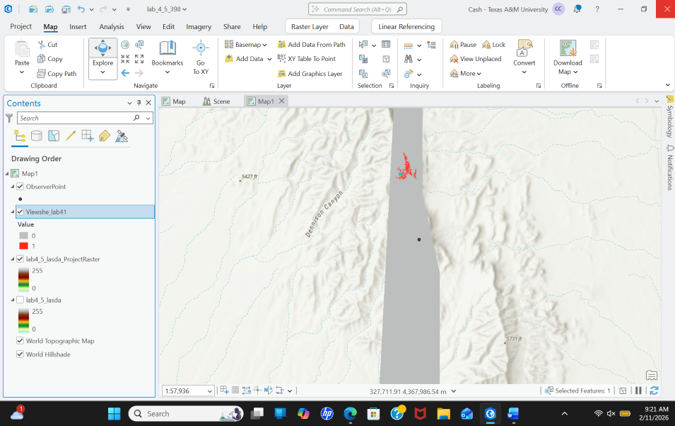
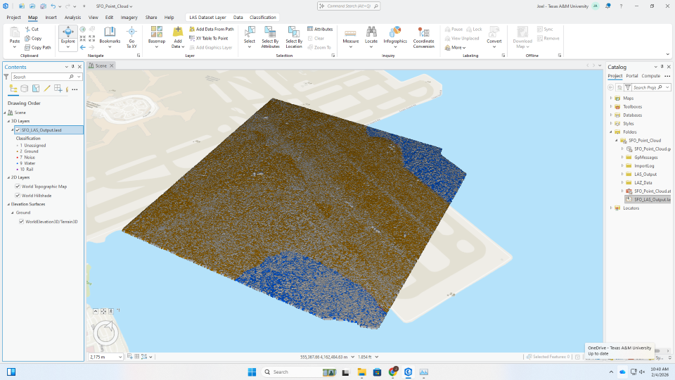
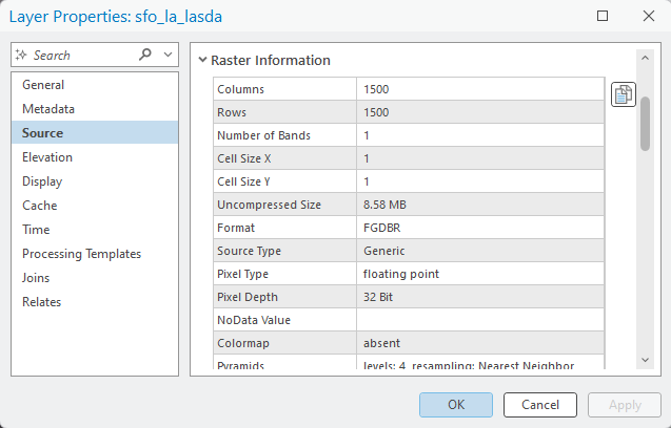

This project explored LiDAR classification and terrain analysis workflows using ArcGIS Pro.
Raw point clouds require classification before terrain modeling can occur.
The workflow effectively distinguished terrain, structures, and vegetation.
Further refine classification parameters to improve accuracy.
Maps, LiDAR visualizations, and analysis outputs from this project.


